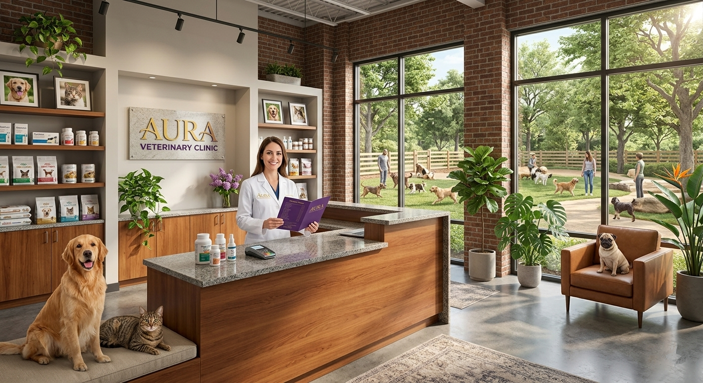

Chapter 03 — Integration & Operations
Routing and Continuity — Customers Never Repeat Themselves Across Any Transfer
1
Customer
At the service point
Data captured before connecting: identity, reason, and context from the service point.
Identity
Reason
Context
2
Advisor A
Receives in context
Receives the session already in context. Handles it, documents it, and decides whether to escalate.
Conversation
Documents
Notes
3
Supervisor B
Inherits full session
Inherits the full session: conversation, documents, and data — without dropping the video.
Full history
Live video
Full context carried through the entire chain. Zero repetition.
Native ACD routing — Genesys, Cisco, Five9, GoContact, Avaya, and more.
Native ACD
Genesys
Cisco
Avaya
Five9
GoContact
& more

Live transfer
Transfer without starting over.
Conversation, documents, and data flow with the customer — the video never drops.